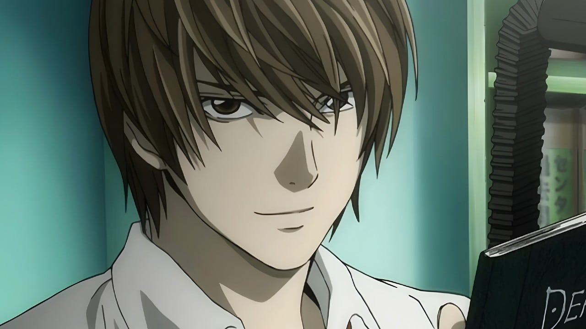

Light Yagami

El Dios del Nuevo Mundo
Light Yagami es el protagonista principal de Death Note. Es un estudiante excepcionalmente inteligente y talentoso que descubre un cuaderno sobrenatural llamado "Death Note", que le otorga la capacidad de matar a cualquier persona cuyo nombre escriba en él.
Con el Death Note en su poder, Light aspira a crear un mundo libre de criminales, donde él reinará como el "dios del nuevo mundo". Su búsqueda de justicia pronto se convierte en una obsesión peligrosa.
"Me convertiré en el dios de un nuevo mundo donde solo vivan personas que yo juzgue como honestas y buenas."
Características
- Nombre completo: Light Yagami (夜神月)
- Alias: Kira
- Ocupación: Estudiante, Detective (temporalmente)
- Inteligencia: Excepcional
- Personalidad: Narcisista, Calculador, Manipulador